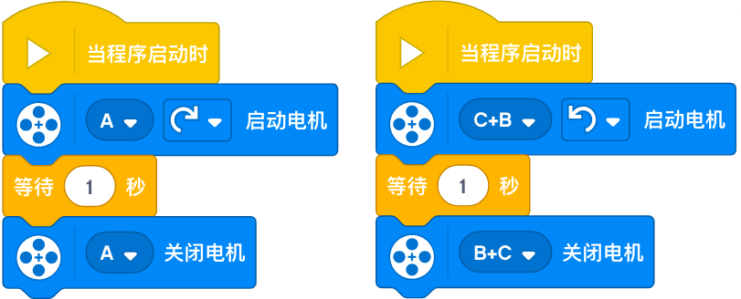
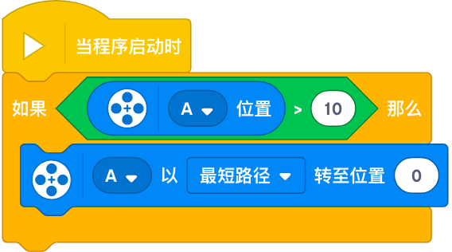

Spike 编程（Programming）

编程是 21 世纪的一项重要技能
它赋予模型生命，教会学生计算机思维
一. 什么是 Spike 编程
一. 什么是 Spike 编程
1.【什么是编程】编程即编写程序。
2.【什么是程序】程序即命令，能够让计算机一步一步去工作，完成某种特定的任务。
3.【什么是计算机】在 SP 中，智能集线器就是一个小计算机，能够按照程序一步一步工作。
4.【什么是 Spike】全名 Spike Prime，是乐高教育的一套机器人编程产品。
5.【什么是 Spike 编程】即编写程序，让 Spike 的智能集线器（SmartHub）按照你的意图一步一步去工作，帮助你完成某种特定任务。
二. Spike 编程环境
二. Spike 编程环境
1. 【电脑】准备一台编程笔记本或平板电脑。
2. 【Spike 编程软件】在编程电脑上下载并安装 Spike 编程软件，程序就是在编程软件中编写的。Spike 编程软件可到乐高官网或应用商店下载。
3. 【Spike 机器人编程产品】连接电脑和智能集线器，分别开启「Spike 智能集线器」和「Spike 编程软件」，可通过「USB 有线」或「蓝牙无线」进行互连。
三. 程序组成
三. 程序组成
1. 【程序组成】多个程序块连接在一起组成程序链，一个或多个程序链组成程序。
2. 【程序链】多个程序块连接在一起组成程序链，程序链上的程序块从上到下按次序执行，程序链的最后一个程序块标志着程序结束。
3. 【程序块】具有特定功能的一块程序。
四. 程序类型

四. 程序类型
1. 【串行程序】由单条程序链组成，同一时刻只有一个程序块在运行。
2. 【并行程序】由多条程序链组成，并通过相同的启动块来同时运行多条程序链。同一时刻有多个程序块在运行。希望同时执行多个程序块时，需要使用并行程序。
五. 伪代码
五. 伪代码
1. 【程序代码】即编写的程序，是让计算机理解的，对人类不是很友好。
2. 【伪代码】即用我们人类语言去描述计算机程序，让人类更好的理解程序。
六. 程序块介绍
六. 程序块介绍
1.【事件程序块】始终是程序链的第一个模块，依据不同的事件来启动程序链。
2.【电机程序块】控制单个或多个不同类型电机同时运转，并可获取电机状态。
3.【运动程序块】控制两个相同类型电机同步运转，移动控制的简便程序块。
4.【灯程序块】控制集线器和距离传感器上的灯。
5.【声音程序块】控制集线器和电脑上的声音播放。
6.【控制程序块】控制程序执行流程，顺序、等待、停止、条件、循环流程。
7.【传感器程序块】用于接收传感器（颜色、距离、力、陀螺仪）的信息。
8.【运算符程序块】实现数学运算，如加减乘除、与或非、大于小于等于等。
9.【变量程序块】控制变量值。
| 事件程序块 | ||
|---|---|---|
| 1 | 程序块 | |
| 伪代码 | 点击运行按钮，开始执行下方程序。 | |
| 事件 | 【事件 1】点击 Spike 软件中的「运行按钮」。 【事件 2】点击集线器的「中间按钮」。 |
|
| 详细说明 | 点击运行按钮，启动程序，从上至下运行拼接在其下方的程序块。 | |
| 栗子 | ||
| 事件程序块 | ||
|---|---|---|
| 2 | 程序块 | |
| 伪代码 | 点击集线器上的左/右按钮，开始执行下方程序。 | |
| 事件 | 【事件 1】点击集线器的「左按钮」。 【事件 2】点击集线器的「右按钮」。 【事件 3】松开集线器的「左按钮」。 【事件 4】松开集线器的「右按钮」。 |
|
| 详细说明 | 点击/松开集线器的左/右按钮，启动程序，从上至下运行拼接在其下方的程序块。 | |
| 栗子 | ||
| 电机程序块 | ||
|---|---|---|
| 1 | 程序块 | |
| 伪代码 | 控制电机运行指定单位数。 | |
| 详细说明 | 【控制运行电机】可控制 1 个或多个不同类型的电机。 【控制运行方向】顺时针或逆时针。 【控制运行距离】圈数、秒数、度数。 【电机堵转检测功能】默认开启。 |
|
| 栗子 | ||
| 电机程序块 | ||
|---|---|---|
| 2 | 程序块 |  |
| 伪代码 | 控制电机转至指定位置。 | |
| 详细说明 | 【控制运行电机】可控制 1 个或多个不同类型的电机。 【控制运行方向】最短路径、顺时针、逆时针。 【控制到达位置】位置范围：0-359 度。 |
|
| 栗子 | ||
| 电机程序块 | ||
|---|---|---|
| 3 | 程序块 | |
| 伪代码 | 控制电机按指定方向持续不断运行。 | |
| 详细说明 | 【控制运行电机】可控制 1 个或多个不同类型的电机。 【控制运行方向】顺时针、逆时针。 【运行时间】持续不断运行。 |
|
| 栗子 |  | |
| 电机程序块 | ||
|---|---|---|
| 4 | 程序块 | |
| 伪代码 | 停止电机运行。 | |
| 详细说明 | 停止 1 个或多个不同类型的电机。 | |
| 栗子 | ||
| 电机程序块 | ||
|---|---|---|
| 5 | 程序块 | |
| 伪代码 | 控制电机运行速度。 | |
| 详细说明 | 【控制运行电机】可控制 1 个或多个不同类型的电机。 【控制电机速度】速度范围：-100 到 100，负数表示反方向运行，默认速度 75%。 |
|
| 栗子 | ||
| 电机程序块 | ||
|---|---|---|
| 6 | 程序块 | |
| 伪代码 | 获取电机当前位置。 | |
| 详细说明 | 获取 1 个电机的当前位置，位置范围：0-359 度。 | |
| 栗子 |  | |
| 电机程序块 | ||
|---|---|---|
| 7 | 程序块 | |
| 伪代码 | 获取电机当前运行速度。 | |
| 详细说明 | 获取 1 个电机当前运行速度。速度范围：0-100 度。注：非电机设置的速度。 | |
| 栗子 | ||
| 运动程序块 | ||
|---|---|---|
| 1 | 程序块 | |
| 伪代码 | 控制双电机同步（相同的转向、转速）运行指定单位数。 | |
| 详细说明 | 【控制运行电机】默认控制A+B电机，建议显示设置。仅可控2个同类电机。 【控制运行方向】向前、向后、顺时针、逆时针。 【控制运行距离】厘米、英寸、圈数、秒数、度数。 【数据】顺时针或逆时针 + 0.5 圈 = 90 度转弯 |
|
| 栗子 | ||
| 运动程序块 | ||
|---|---|---|
| 2 | 程序块 | |
| 伪代码 | 控制双电机异步（不同的转向、转速）运行指定单位数。 | |
| 详细说明 | 【控制运行电机】默认控制A+B电机，建议显示设置。仅可控2个同类电机。 【控制运行方向】转向值范围：-100 至 100。0 会沿直线运行，-100 或 100 会以自身为中心进行旋转。 【控制运行距离】厘米、英寸、圈数、秒数、度数。 |
|
| 栗子 | ||
| 运动程序块 | ||
|---|---|---|
| 3 | 程序块 | |
| 伪代码 | 控制双电机异步（不同的转向、转速）持续不断运行。 | |
| 详细说明 | 【控制运行电机】默认控制A+B电机，建议显示设置。仅可控2个同类电机。 【控制运行方向】转向值范围：-100 至 100。0 会沿直线运行，-100 或 100 会以自身为中心进行旋转。 |
|
| 栗子 | ||
| 运动程序块 | ||
|---|---|---|
| 4 | 程序块 |  |
| 伪代码 | 控制双电机停止运行。 | |
| 详细说明 | 控制双电机停止运行。 | |
| 栗子 | ||
| 运动程序块 | ||
|---|---|---|
| 5 | 程序块 | |
| 伪代码 | 控制双电机转速。 | |
| 详细说明 | 【控制电机速度】速度范围：-100 到 100，负数表示反方向运行，默认速度 75%。 | |
| 栗子 |  |
|
| 运动程序块 | ||
|---|---|---|
| 6 | 程序块 | |
| 伪代码 | 设置运行的双电机。 | |
| 详细说明 | 设置运行的双电机所连接的端口。 | |
| 栗子 | ||
| 运动程序块 | ||
|---|---|---|
| 7 | 程序块 | |
| 伪代码 | 设置双电机转一圈所对应的移动距离。 | |
| 详细说明 | 【用途】设置双电机转一圈，车轮对应的移动距离。用于移动距离校准。 【数值】Spike 车轮的直径为 5.5 厘米，车轮的周长为 3.14*5.5=17.27 厘米，所以一般设置值为 17.5 厘米。 【单位】1 英寸=2.54 厘米 |
|
| 栗子 | ||
八. 流程图（Flowchart）
八. 流程图（Flowchart）
1.【什么是流程图？】使用图形表示程序运行的流程（即算法）。
2.【为什么要使用流程图？】千言万语不如一张图，使用图形化方式更清晰的表达程序的运行；流程图是练习抽象化能力的有效工具，可以帮助学生规划和构建自己的解决方案；
3.【如何制作流程图？】可手绘流程图，也可使用电脑工具绘制。
4.【流程图的规范有哪些？】圆圈（或椭圆）表示流程的开始和结束；箭头表示流程运行方向；矩形表示输入输出；使用菱形表示条件判断；
九. 练习（Excercise）

9.1. 练习一
9.1. 练习一
方形运动
9.2. 练习二
9.2. 练习二
1. 单轮控制小车，前后左右运动。
2. 编写程序，在小车运动的同时，让大型电机也转起来，模拟无人车顶上的雷达扫描器。
9.3. 练习三
9.3. 练习三
圆形运动、曲线自由运动。
十. 项目（Project）